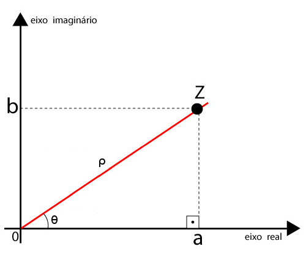
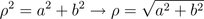
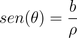
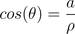
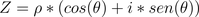

Números Complexos e o plano de Argand-Gauss
Os números complexos surgiram quando os matemáticos buscavam fórmulas eficientes de se encontrar raízes de polinômios de terceiro grau, no final do século XVIII. A grande questão era se esses números realmente permitiriam avanço na teoria algébrica. Um dos matemáticos que contribuíram para a definição desses números foi Jean Robert Argand, que publicou um ensaio sobre a representação geométrica dos números complexos. Contudo, quem sistematizou os conceitos foi o matemático alemão Carl F. Gauss, que formulou uma equivalência entre a geometria plana e os números complexos. Dito com outras palavras, Gauss associava a cada número complexo um ponto no plano cartesiano.
Essa ideia proposta por Gauss facilitou o estudo dos números complexos, que, até então, eram considerados números misteriosos.
O plano de Argand-Gauss é, sem dúvida, muito útil, pois, através dele, pode-se associar a cada número complexo da forma a+bi um par ordenado do plano cartesiano, no caso (a,b). Em suma, o plano consiste de duas retas perpendiculares entre si, com a reta vertical representando a parte imaginária do número, ao passo que a horizontal representa sua parte real.

Outras interpretações podem ser obtidas com essa maneira de se representar os números complexos. Com base no plano representado, calcula-se a distância ρ entre os pontos O e Z. Observe que basta aplicar o teorema de Pitágoras no triângulo retângulo. Dessa forma, segue-se que:

O módulo de um número complexo Z é representado pela letra ρ, mas pode ser representado por |Z|. O ângulo θ (0 ≤ θ ≤ 2π), formado pelo eixo real e o segmento de reta O̅Z̅, é chamado de "argumento de Z" e é indicado por arg(Z). Com base nessas definições, é possível estabelecer as seguintes relações na interpretação geométrica dos complexos:


Segue, assim, que é possível representar um número complexo nesse plano por suas coordenadas polares:

Essa forma de representar os números complexos possibilita uma vasta aplicação do mesmo na matemática, engenharias e física.
Você pode ler mais detalhes sobre essas duas representações no livro "Matemática Contexto e Aplicações", volume 3.